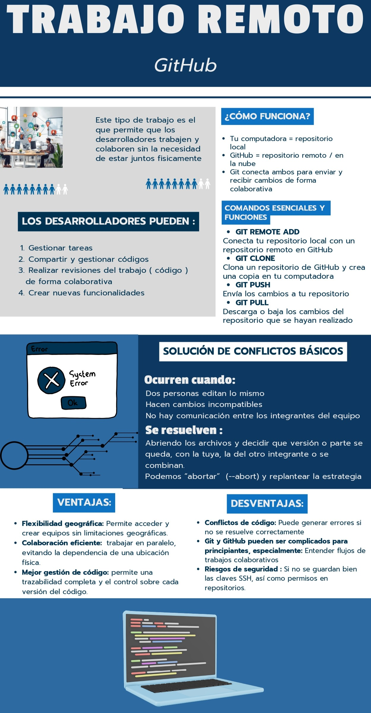

Actividad:
Crea un nuevo repositorio en GitHub con el nombre que tú elijas. Luego, desde tu computadora, clónalo utilizando el siguiente comando:
git clone https://github.com/tu_usuario/nombre_del_repositorio.git
Sustituye tu_usuario y nombre_del_repositorio por los valores reales de tu cuenta y tu repositorio.